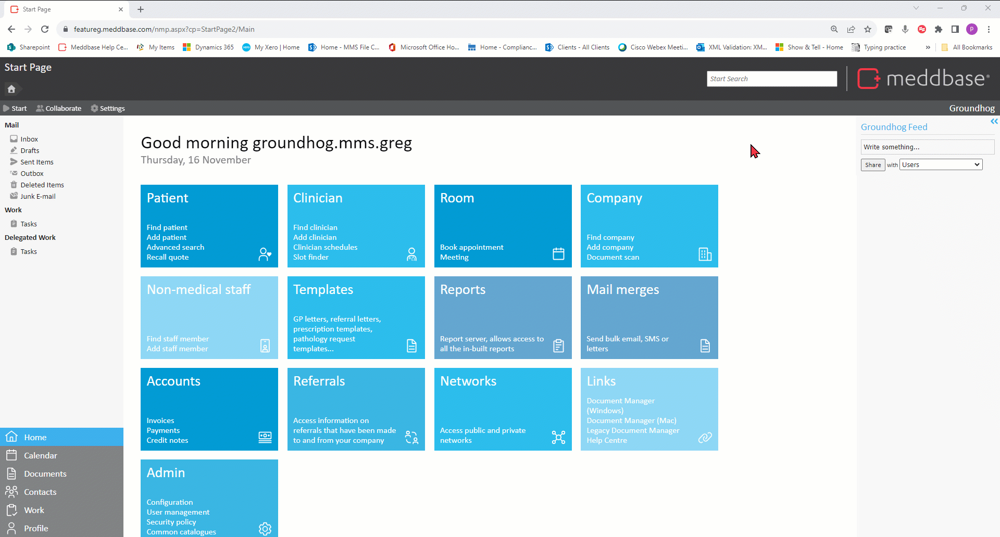
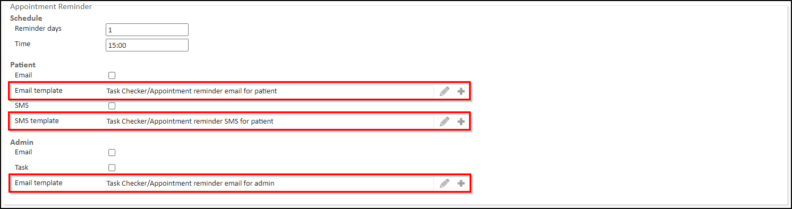
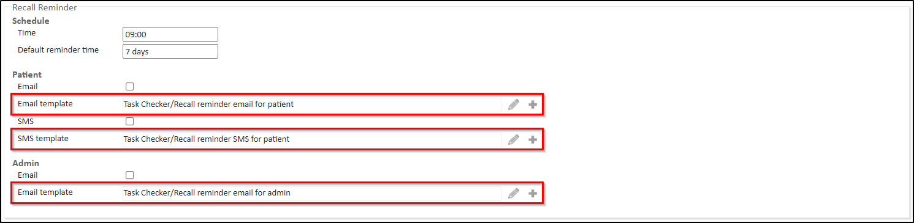
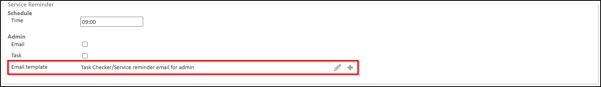

Meddbase is a complex, multi-layered EMR system, capable of accommodating a wide variety of workflows and business models ranging from small practices, straightforward setup and only a couple of people using the application, through to global enterprises with thousands of users and nuanced workflows and business requirements.
Meddbase provides a high number of configuration options allowing the application to adapt to complex business scenarios, as well as a host of default settings that it can fall back on when complexity is minimal.
Meddbase can be and is used in Primary Care, Secondary Care as well as in Occupational Health.
What is the purpose of the article?
This article is the 4th in a series of articles providing overview and details of setup and configuration steps required for Practice Management, which focuses on the application of the Meddbase system in Primary and Secondary Care.
This article will explain the following configuration aspects:
Task Checker - Automated messages and introduction to Template Code.
Common Catalogues.
Task Checker - Automated messages and introduction to Template Code
The Task Checker is a section of Meddbase that allows configuring and defining automated email and SMS messages that will be sent from the system automatically.
Every patient record in Meddbase contains a Personal Details section where Consent options can be set for that patient. Consent options dictate what type of contact the patients agrees to receive and the system respects these settings throughout. Messages of a given type will not be sent to a patient who hasn't agreed to receive them. More on this can be found in the Admin > Configuration > Consent topic.
To access the Task Checker:
From the Start Page click the Admin tile.
Click the Configuration tile.
On the left-hand side menu scroll down and click Task Checker.

You will be presented with a series of configuration options for various types of automated messages and tasks.
Remember to click Save to apply your settings.
Appointment Confirmation
Appointment confirmation messages can be sent to the email address stored against a patient's record when an appointment is booked, either in Meddbase or via the Patient Portal.
Confirmation messages can also be sent to a designated email inbox and a task assigned to the attending doctor.
Within the Appointment Confirmation section are the following settings:
Checkbox/Setting/Field
Description
iCalendar > Attach ICal to emails (checkbox)
This checkbox, when ticked, attaches an .ics calendar invite to confirmation emails.
Patient > Email (checkbox)
This checkbox, when ticked, turns appointment confirmation emails on.
This field allows selecting the email template that will generate the appointment confirmation patient email.
Patient > SMS (checkbox)
This checkbox, when ticked, turns appointment confirmation SMS messages on.
Patient > SMS template (template selection field)
This field allows selecting the SMS template that will generate the appointment confirmation patient SMS.
Admin > Email (checkbox)
This checkbox, when ticked, turns admin appointment confirmation emails on.
The appointment confirmation emails will be sent to the Client address set under Admin > Configuration > Email.
Admin > Task (checkbox)
This checkbox, when ticked, creates a task for the attending doctor when an appointment is booked.
Admin > Email template (template selection field)
This field allows selecting the email template that will generate the appointment confirmation email for the attending doctor.
Appointment Reschedule
Appointment rescheduled messages can be sent to the email address stored against a patient's record when an appointment is rescheduled, either in Meddbase or via the Patient Portal.
Rescheduled appointment messages can also be sent to a designated email inbox and a task assigned to the attending doctor.
Checkbox/Setting/Field
Description
Patient > Email (checkbox)
This checkbox, when ticked, turns appointment rescheduled emails on.
This field allows selecting the email template that will generate the appointment rescheduled patient email.
Patient > SMS (checkbox)
This checkbox, when ticked, turns appointment rescheduled SMS messages on.
Patient > SMS template (template selection field)
This field allows selecting the SMS template that will generate the appointment rescheduled patient SMS.
Admin > Email (checkbox)
This checkbox, when ticked, turns admin appointment rescheduled emails on.
The appointment rescheduled emails will be sent to the Client address set under Admin > Configuration > Email.
Admin > Task (checkbox)
This checkbox, when ticked, creates a task for the attending doctor when an appointment is rescheduled.
Admin > Email template (template selection field)
This field allows selecting the email template that will generate the appointment rescheduled email for the attending doctor.
Appointment Reminder
Prior to the appointment start time, appointment reminder messages can be sent to the email address stored against a patient's record when an appointment is booked, either in Meddbase or via the Patient Portal.
Reminder messages can also be sent to a designated email inbox and tasks assigned to users in the Appointment Reminder Admin role group.

Within the Appointment Reminder section are the following settings:
Checkbox/Setting/Field
Description
Schedule > Reminder days (text field)
This field allows defining the no. of days (integer) before the appointment date the reminder will be sent.
Schedule > Time (text field)
This field allows defining the time (as HH:MM) the appointment reminder will be sent.
Patient > Email (checkbox)
This checkbox, when ticked, turns appointment reminder patient emails on.
This field allows selecting the template that will generate the appointment reminder patient email.
Patient > SMS (checkbox)
This checkbox, when ticked, turns appointment reminder SMS messages on.
Patient > SMS template (template selection field)
This field allows selecting the SMS template that will generate the appointment reminder patient SMS.
Admin > Email (checkbox)
This checkbox, when ticked, turns appointment reminder admin emails on.
The appointment reminder admin emails will be sent to the Client address set under Admin > Configuration > Email
Admin > Task (checkbox)
This checkbox, when ticked, creates a task for the Appointment Reminder Admin role group.
Admin > Email template (template selection field)
This field allows selecting the email template that will generate the admin email for the Appointment Reminder Admin role group.
Recall Reminder
When a Recall is created in Meddbase automated reminder messages and/or tasks can be sent/generated to patients and/or users at a specific moment in time before the recall due date.

Within the Recall Reminder section are the following settings:
Checkbox/Setting/Field
Description
Schedule > Time (text field)
This field allows defining the time (as HH:MM) the recall reminder will be sent.
Schedule > Default reminder time (text field)
This field allows defining the no. of days (integer) before the recall due date, the reminder will be sent.
Patient > Email (checkbox)
This checkbox, when ticked, turns patient recall reminder emails on.
This field allows allows selecting the email template that will generate the recall reminder patient email.
Patient > SMS (checkbox)
This checkbox, when ticked, turns patient recall reminder SMS messages on.
Patient > SMS template (template selection field)
This field allows selecting the SMS template that will generate the recall reminder patient SMS.
Admin > Email (checkbox)
This checkbox, when ticked, turns admin recall reminder emails on for members of the Recall Reminder Admin role group.
The recall reminder emails sill be sent to the Client address set under Admin > Configuration > Email
Admin > Email template (template selection field)
This field allows selecting the email template that will generate the recall reminder patient email for the Recall Reminder Admin role group.
Service Reminder
When a Test, e.g. Blood Lipids, has an 'Expected turn-around time from starting the test to receiving the results (in days)', set under Admin > Service Management > Test, Meddbase can trigger automatic reminder tasks and/or messages to a designated inbox and users, if the Lab does not return the Pathology Result within that time.

Within the Service Reminder section are the following settings:
Checkbox/Setting/Field
Description
Schedule > Time (text field)
This field allows defining the time (as HH:MM) the service reminder will be sent.
Admin > Email (checkbox)
This checkbox, when ticked, turns admin service reminder emails on. The email will be sent when a result from the lab doesn't arrive past its 'Expected turn-around time from starting the test to receiving the results (in days)'
The service reminder emails sill be sent to the Client address set under Admin > Configuration > Email.
Admin > Task (checkbox)
This checkbox, when ticked, creates a task for the Recall Reminder Admin role group when a result from the lab doesn't arrive past its 'Expected turn-around time from starting the test to receiving the results (in days)'.
Admin > Email template (template selection field)
This field allows selecting the email template that will generate the service reminder patient email for the Recall Reminder Admin role group.
Birthday Reminder
Meddbase can send birthday messages to patients automatically according to the date saved on their Patient Records.
Within the Birthday Reminder section are the following settings:
Checkbox/Setting/Field
Description
Schedule > Time (text field)
This field allows defining the time (as HH:MM) the service reminder will be sent.
Patient > Email (checkbox)
This checkbox, when ticked, turns birthday reminder patient emails on.
This field allows selecting the email template that will generate the birthday reminder patient email.
Patient > SMS (checkbox)
This checkbox, when ticked, turns birthday reminder patient SMS messages on.
Patient > SMS template (template selection field)
This field allows selecting the SMS template that will generate the birthday reminder patient SMS.
Questionnaire Reminder
This section is a part of a larger setup process for the Patient Portal feature.
When an appointment type with an associated questionnaire, that questionnaire is sent to the Patient Portal for the attending patient to complete.
Questionnaire reminder email and/or SMS messages can be sent to the patient prior to the appointment start time.
Within the Questionnaire Reminder section are the following settings:
Checkbox/Setting/Field
Description
Email (checkbox)
This checkbox, when ticked, turns birthday reminder patient emails on.
Email Time (text field)
This field allows defining the time (as HH:MM) the questionnaire reminder email will be sent 1 day before the appointment date.
Email template (template selection field)
This field allows selecting the email template that will generate the patient questionnaire reminder email.
SMS (checkbox)
This checkbox, when ticked, turns questionnaire SMS messages on.
SMS Time (text field)
This field allows defining the time (as HH:MM) the questionnaire reminder SMS will be sent 1 day before the appointment date.
SMS template (template selection field)
This field allows selecting the SMS template that will generate the patient questionnaire reminder SMS.
Common Catalogues
Common Catalogues is a feature/configuration section available to Administrators/supers of Meddbase that enables the configuration of different types of lists and codes. Commonly used data configured in Common Catalogues can typically be selected (usually from a dropdown menu) elsewhere in the system.
Examples of these are Sites, Locations, Payment types, Employee Divisions, Stock Record Types and Titles.
![[Full alt text]](images/Task%20Checker%20Appointment%20Confirmation%20section.png)
![[Full alt text]](images/Task%20Checker%20Birthday%20Reminder%20section.png)
![[Full alt text]](images/Task%20Checker%20Questionnaire%20Reminder%20section.png)